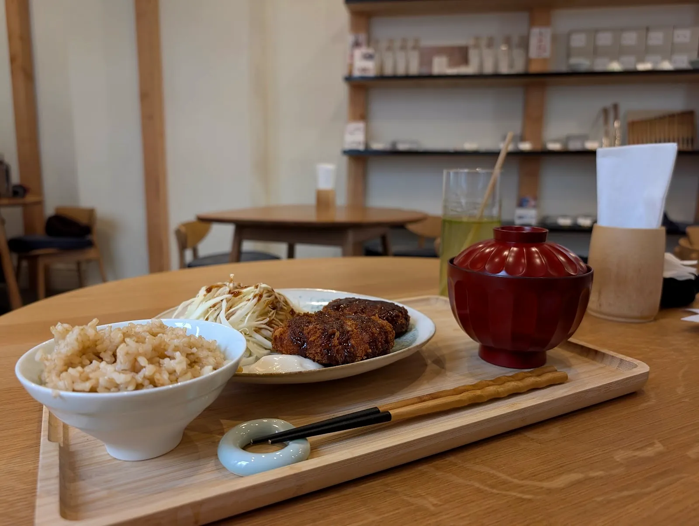
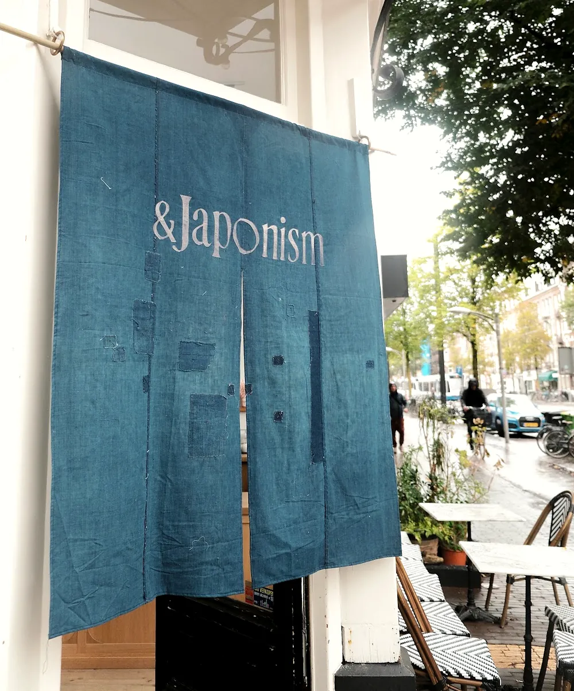
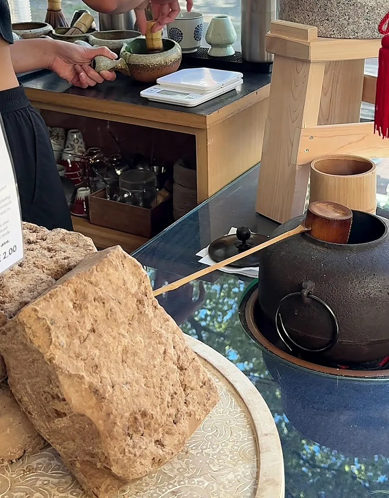
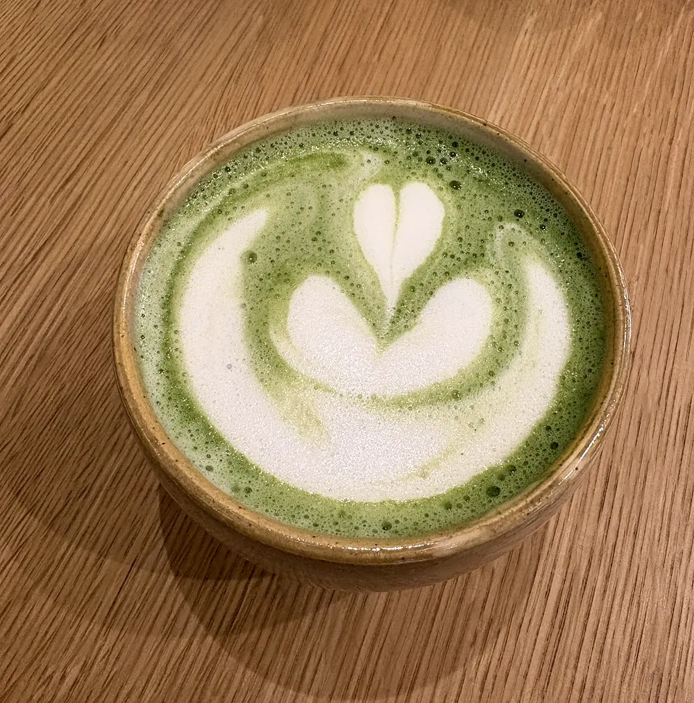
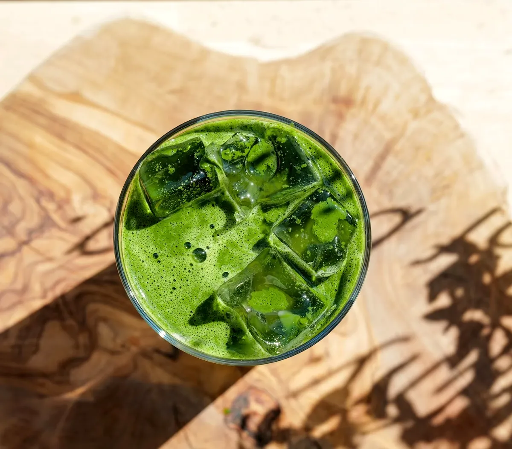
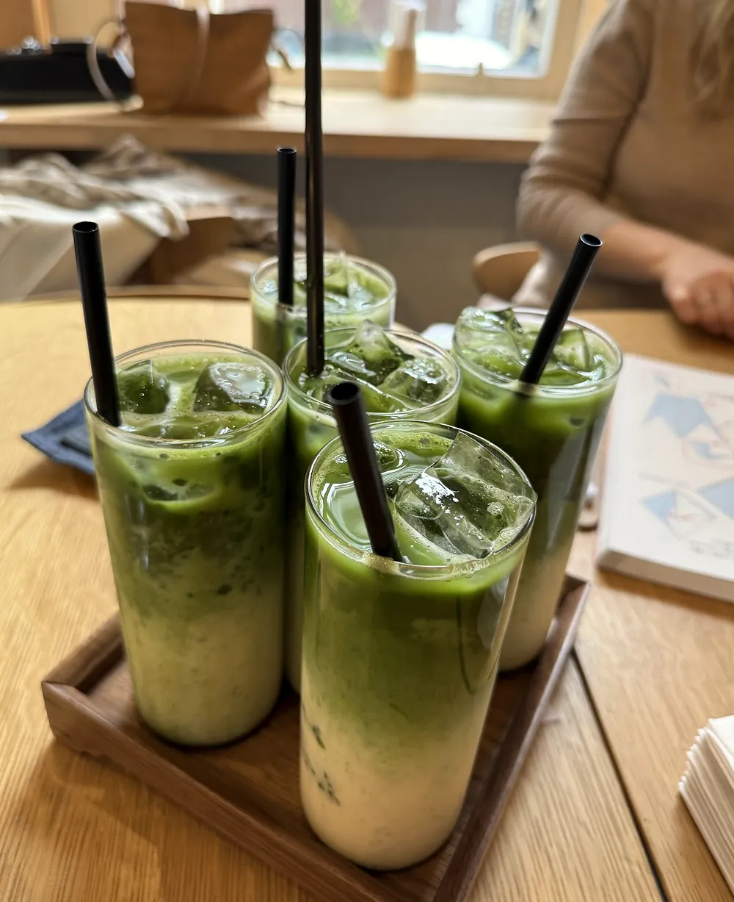
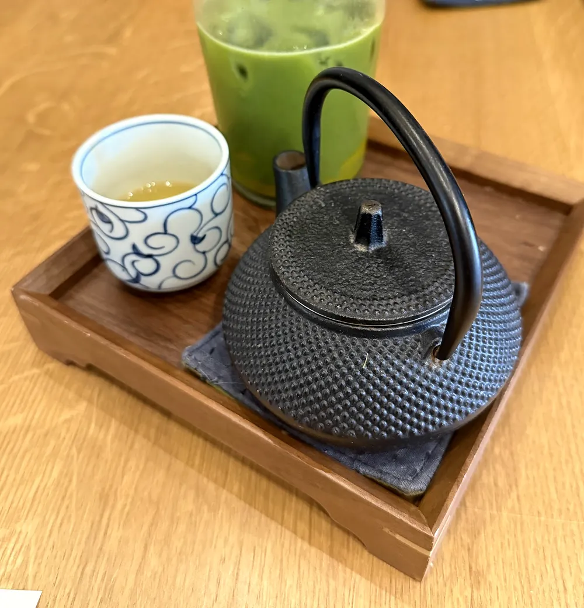
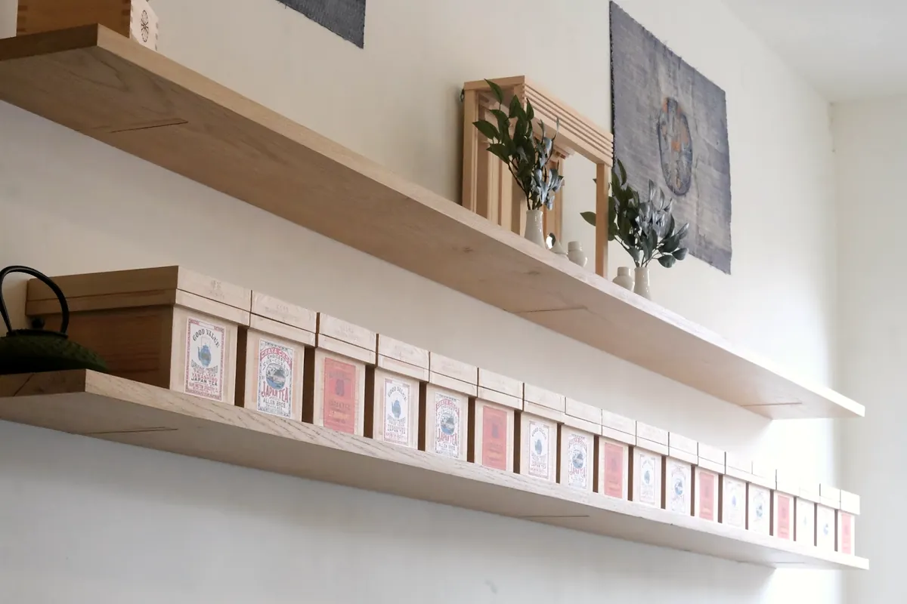
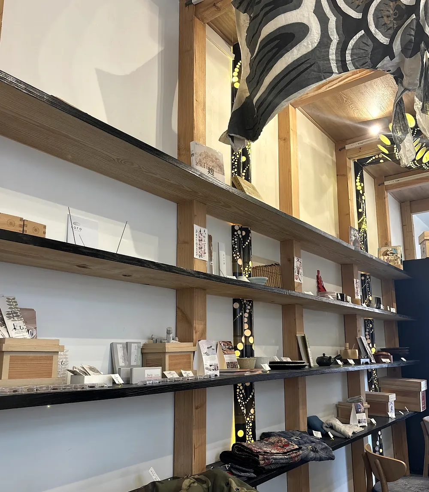

A little Japan,
just behind the noren.
Japanese café, matcha bar and lifestyle shop on the Overtoom. Matcha and hojicha lattes, onigirazu on lacquer trays, miso soup with shiitake, and shelves of things to take home.
Through the indigo curtain,
somewhere calmer.
&Japonism is a Japanese café, matcha bar and lifestyle shop in Oud-West. Look for the faded indigo noren at the door, patched by hand in true boro style.
Step through and the Overtoom goes quiet. Light wooden tables, food on lacquer trays, red lacquer bowls for the miso, and matcha made at the bar in a proper chawan. Along the walls: tea, matcha tools, ceramics and traditional clothing to take home.
“From the entrance, service, food variety, hospitality. Everything was thought through.”
Google review


- 一
Café
Onigirazu, karaage, okonomiyaki and miso soup, served on lacquer trays.
- 二
Matcha bar
Matcha and hojicha lattes, hot or iced, and Japanese tea in a cast-iron pot.
- 三
Lifestyle shop
Traditional clothing, matcha tools and tea, on hinoki-coloured shelves.
- 四
Evenings
Dinner with sake by the glass or tokkuri, Japanese wine and Niigata craft beer.
Whisk the matcha
Good usucha wants a fast zig-zag from the wrist, not lazy circles, until the big bubbles break into a fine, creamy foam. Give it a go. The bowl tells you how you’re doing.
Koicha-thick · no froth yet
Whisk fast, from the wrist, in an M or a W.





More than a café
Between the tables there’s a small Japanese lifestyle shop. Guests mention traditional clothing and high-quality matcha tools; the shelves hold tea, ceramics and little things you didn’t know you needed.
- Matcha tools
- Tea
- Ceramics
- Traditional clothing

Dinner, and a little sake
Open until 21:00, on Fridays and Saturdays until 22:00. In the evening there’s dinner, with junmai sake by the glass or tokkuri, Japanese wine from Yamanashi and craft beer from Niigata.
See the sake list →4.7377 Google reviews
“If you want a quick trip to Japan without leaving the country, this is the place to come.”
Google review
“A very peaceful cafe. Would come back here to relax with a good book and a matcha.”
Google review
“The food was outstanding, not only delicious but also beautifully plated like a work of art.”
Google review
“Honestly some of the best comfort food I’ve had in a long time, everything just hits right.”
Google review
“The interior is exquisitely decorated, offering an elegant and serene atmosphere that instantly transports you.”
Google review
Find the indigo noren
Overtoom 255H
1054 HW Amsterdam · Oud-West